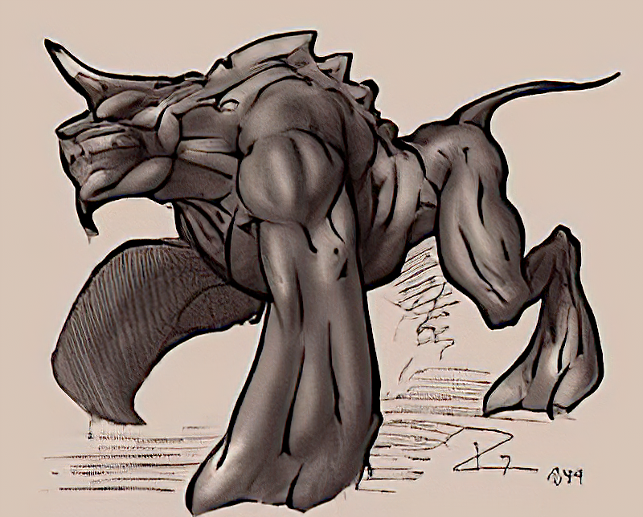
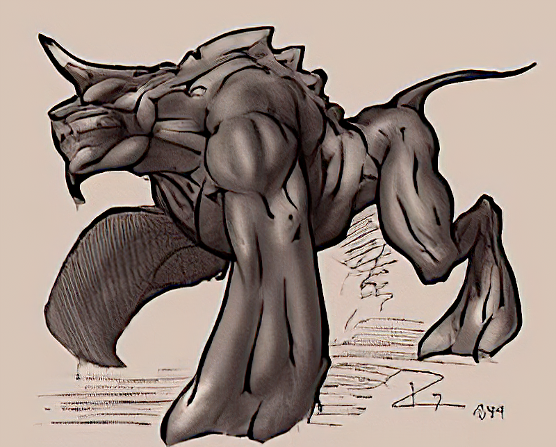
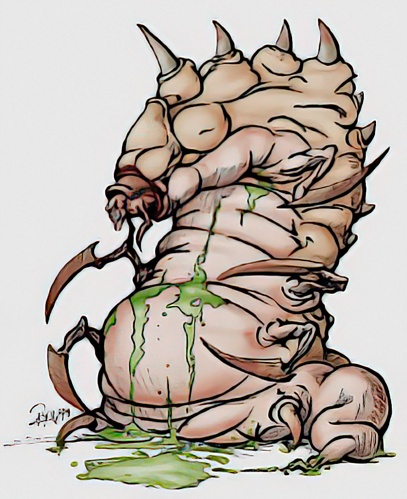
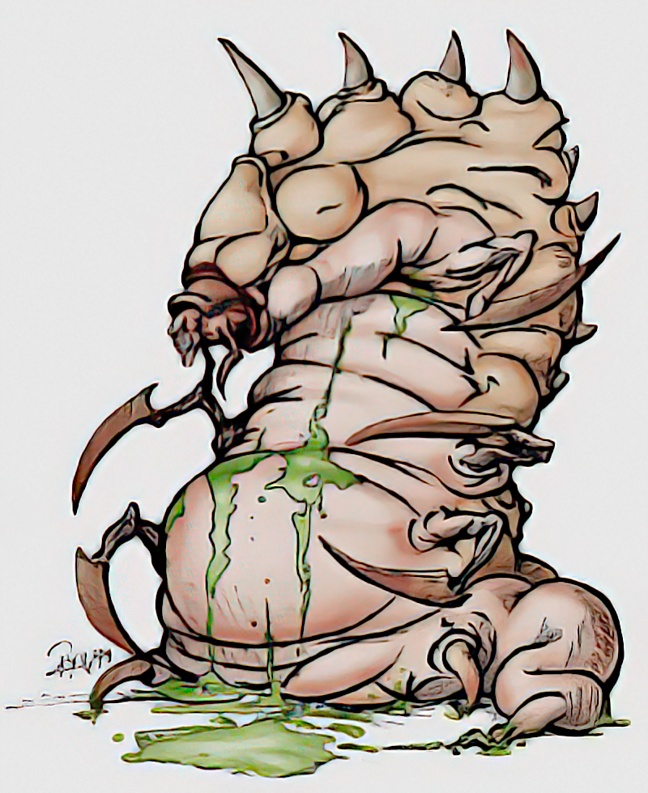

These were the designs that were approved by Mike, Vadim is not only the creator of these iconic monster concepts, he also modeled and animated them as they were used in the game, some of them almost unchanged until release. These concepts were not part of Mikes design folders. Mike thought they were lost, but fortunately, they aren't. We have them from Vadims website and they were improved via AI upscaling. Vadim designed the monsters according to the desire of Mike to have no generic fantasy creature, everything was supposed to be unique, even if they had common names like wolf or orc, their look was supposed to be different. -flosha


 



 



These are the discarded designs that Mike didn't approve, which never found their way into the game. They were part of the design folders from Mike that I got for the 20th anniversary. I have digitised them for the archive. One of the monsters was completely scribbled with a red fineliner to mark it as discarded. I attempted to remove all those red lines to the best of my ability. Eight of the monsters are unnamed. There are two concepts of a vulture, early concepts of the scavenger, snapper and swampshark, two early wolf concepts and four different concepts of demons. -flosha